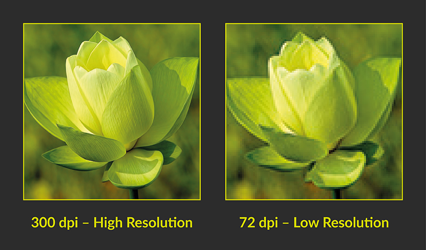

| Home | List | Link | Directory | Images | Tables | Forms | Contact Me |
|---|
We will learn how to:
Adding background images can be done using CSS.
TIP When creating a webpage, it is a good practice to make a folder for all images used in your website. You can also add sub-folders for each type of images, such as JPEG, PNG, and GIF.
To add image, use img element and make sure it has src attribute with correct location for the html file as the value.
src - this is to locate the image file you want to appear on your site. You can use relative URLs in locating the image file of your site.
alt - if the image fails to appear on the website, it is a good customary to use this attribute to descript what's on the image.
title - use this to put a description on the image. This appears when hovering your mouse on the image.
height and width - this is to configure the dimensions of your image\ on your site. If you want to change it relative to height or width, just assign a value for either height or width only.
The most popular is Adobe Photoshop.
If your picture has different colors, use JPEG. Usually, it is used in photography. For example an overcast sky might not look like it has large areas that are just white or gray, but the picture is usually made up of many different colors that are subtly different.
Example of image used for web page in JPEG format
If you are using flat images, meaning images with less colors, then use PNG or GIF. Logos, illustrations, and infographics are usually called flat images.
Example of flat image (or flat design) used for a web page that is in PNG format
Images created for the web should be saved at a resolution of 72 ppi. The higher the resolution of the image, the lager the size of the file.
JPGs, GIFs, and PNGs belong to a type of image format known as bit map. They are made up of resolution of an image is the number of squares
that fit within 1 inch x 1 inch square area.
Images appearing on computer screens are made of tiny squares called pixels. The web browsers on most desktop
computers display images at a resolution of 72 pixels per inch (ppi). Images in print materials (such as books and magazines)
are made up of tiny circles called dots. These images are usually printed at a resolution of 300 dots per inch (dpi).
Higher resolution is not always a good thing when including in your web pages. Too large of resolution may cause your web page to load longer.
Always remember that computers are capped to 72 ppi display.
Vector images differ from bitmap images and are resolution-independent. Vector images are commonly created in programs such as Adobe Illustrator.
Flat design is a sample of a vector image that is created in Adoble Illustrator.
These shows several frames of an image in sequence and therefore can be used to create simple animations.

Usually, images comes with captions. Lately, HTML5 added a new HTML tag which is called the figure element. This element contains images and their caption so that the two are associated.
Figcaption element is the element that makes the caption to the image possible. The content of this element contains the caption to the image.
Here is the example of Figure and Figcaption element.
The figure contains img element and if you want, you can also add a direct link for its image source. To do that, you add a href element and contain the img element.
After the figure element, follows the figcaption element. This contains the caption for the image.
Figure: Here's the caption for the picture. Can you believe it? He's an electrical engineer that became famous for his picture. We can align the paragraph to the right by adding align attribute inside the paragraph element. We can also add another paragraph inside a cell if we want to. For practice purposes, we can also align the paragraph to the left. Same with what we did above. Are we good? Great! Now let's join Harold with his coffee. |
 |